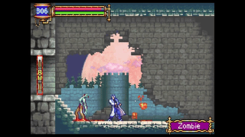

Las primeras impresiones son importantes, lo mismo ocurre en los videojuegos, el primer enemigo puede tener una variedad de propósitos, desde enseñar la mecánica principal de todo el juego e incluso dar a entender el mensaje que el creador le quiere dar al jugador. En el diseño de niveles es esencial hacer el videojuego enfocado a la gente que nunca ha tocado un control, y con esto comencemos
Castlevania aria of sorrow(GBA)
En este juego, el primer enemigo es un zombie, se caracteriza por tener movimientos simples y lentos, en esta ocasión el jugador no sabe qué hacer ya que únicamente puede moverse de izquierda a derecha, esto genera una amplia variedad de situaciones
El jugador no hace nada: Ya que el jugador es un inexperto, se dejará golpear fácilmente por el zombie, sin embargo otra característica que tiene este último es que quita muy poco daño, es casi insignificante en comparación con la cantidad de vida que el jugador tiene, esto le da mucho tiempo varias oportunidades para que piense en algo. En el caso de que el jugador tenga un game over, simplemente volverá al inicio y debe pasar una puerta que se encuentra literalmente en su cara para volver a intentarlo
El jugador salta, el aprender a saltar es una mecánica fundamental en los castlevanias y por su puesto es una forma de pasar de largo con este enemigo, pero no siempre va a ser una buenas solución, ya que si no ataca a ningún enemigo, no subirá de nivel, si no sube de nivel, el jugador no tendrá la habilidad ni la destreza suficiente para poder pasar por enemigos más fuertes. Como se puede ver en la segunda imágen, el jugador se encuentra con un enemigo más grande, más rápido y más fuerte, en esta ocasión saltar no sirve de nada, el diseño de este estrecho pasillo hace que sea imposible saltarlo y además es el único enemigo que obstruye la puerta contra el primer jefe, eso signnifica que si el jugador no puede matar a este enemigo, estará muy lejos de derrotar al jefe
El jugador ataca: Otra mecánica fundamental en todo el juego, aprender atacar para poder derrotar a los monstruos, subir de nivel y de esta forma ser más fuerte

Obstáculo inamovible: La última mecánica del juego y la más importante, encontrar obstáculos imposibles de pasar por el momento, como se puede ver, el jugador sin importar que tan fuerte apriete el botón para saltar, simplemente no va a poder alacanzar esa plataforma, esta entrega de castlevania es del génermo metroidvania, y encontrar este tipo de obstáculos es normal ya que "obliga" al jugador a seguir explorando hasta encontrar algún item, poder o reliquia que le permite poder alcanzar esa plataforma, en este caso, el jugador necesitará de un doble salto para poder alcanzar la plataforma, habilidad que conseguirá después